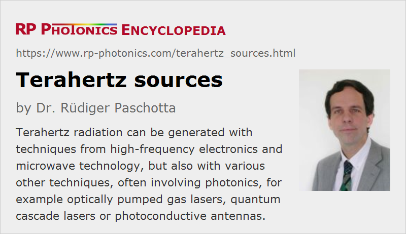

Terahertz Sources
Definition: sources of electromagnetic radiation with frequencies around 0.1 THz to 10 THz
Alternative term: t-wave emitters
German: Terahertz-Quellen, Terahertz-Emitter
How to cite the article; suggest additional literature
Author: Dr. Rüdiger Paschotta
Terahertz radiation is typically understood to be electromagnetic radiation in the frequency range from roughly 0.1 THz to 10 THz, corresponding to wavelengths from 3 mm down to 30 μm. These frequencies are hard to generate with conventional means of electronics, which can access only the lower end of the terahertz region. Therefore, a number of other kinds of terahertz sources have been developed, mostly since the 1990s. More widespread use of terahertz radiation results not only from the development of more powerful and efficient terahertz sources, but also from novel schemes to modulate and to detect such radiation. In many cases, photonics plays a vital role for the generation, modulation and detection of terahertz radiation.
Some kind of terahertz sources essentially generate narrow-band continuous-wave terahertz radiation, while others produce shorter terahertz pulses, which can have a high peak power and a rather large bandwidth.
For applications of terahertz sources, for example in terahertz spectroscopy, communications and imaging, see the article on terahertz radiation.
Sources Derived from Microwave Technology
Microwave technology presents a number of options for high-frequency oscillators, such as Gunn diodes, Impatt diodes and resonant tunneling diodes. Some of these have been optimized long ago for emitting at particularly high frequencies up to several terahertz. In that regime, however, the performance in terms of output power and power conversion efficiency is normally much lower than at lower frequencies.
Another way to obtain higher frequencies is harmonic generation in nonlinear electronic devices. This requires high-power pump sources and typically delivers rather low output powers.
Generally, the performance of such microwave technology sources is quite modest in terms of output power and spectral coverage.
Free-electron Lasers and Synchrotrons
Free electron lasers as well as synchrotron light sources can be constructed which emit very high powers in the terahertz spectral regions. They are useful for various research purposes, but are very large and expensive. Therefore, they have quite limited use for general terahertz technology.
Gas Lasers
Certain molecular gas lasers can generate terahertz radiation. (They are also sometimes called far infrared lasers.) They exploit transitions of certain molecules (e.g. of methanol) between molecular rotational states, with which discrete frequencies in a wide range can be generated, typically with output powers of a few milliwatts or some tens of milliwatts. Such gas lasers are usually optically pumped, e.g. with a CO2 laser. For example, there are CO2-pumped methanol lasers, emitting at 2.5 THz. The conversion efficiency is very low.
Quantum Cascade Lasers
Quantum cascade lasers are semiconductor lasers which have originally been developed for emitting in the mid- and far-infrared spectral region. Optimization for particularly long emission wavelength has lead to emission frequencies of only a few terahertz [7, 10, 14, 17, 19], which may be tuned in some limited range. Such lasers are very compact, but need a cryogenic cooling system.
Photoconductive Antenna
In the area of optical sampling technology, photoconductive dipole antennas have been developed which are suitable both for generation and detection of high-frequency electromagnetic signals. Miniature versions of such antennas allowed their use also in the terahertz region. Essentially, a sender antenna consists of two short metallic stripes with a small gap in between, made on a semiconductor material with a short charge carrier lifetime. A DC bias voltage is applied to the stripes, and an intense ultrashort laser pulse from a mode-locked laser focused on the region between the metallic stripes generates a short circuit for a short time. (The semiconductor gap serves as a photoconductive switch.) The fast potential change induces fast oscillations in the antenna, which in turn lead to terahertz radiation emitted in a wide range of angles.
The decay is often so fast that one obtains a single-cycle source, i.e., a source emitting only about a single cycle of the electromagnetic oscillation. The emission spectrum may then roughly cover a substantial part of an octave or even more. This can be useful for spectroscopy, for example, as it allows one to cover a large frequency range without needing a tunable source.
For higher output powers, devices with larger areas have been constructed with interdigitated electrodes as part of a metal–semiconductor–metal (MSM) structure.
Photoconductive antennas can also be operated in a continuous-wave mode, where irradiation is done with two single-frequency laser diodes (or with a single two-color laser [9]), having a terahertz frequency difference. Particularly in that continuous-wave regime, photoconductive antennas are also called terahertz photomixers. They can produce spectrally very pure terahertz radiation, which can also be frequency-tunable.
Modulation of the resulting terahertz signal is easily possible by modulating one of the involved optical waves.
Parametric Interactions in Nonlinear Crystals
One can use difference frequency generation of two optical waves with similar frequency to obtain terahertz radiation. Alternatively, one may have two frequency components of a broadband ultrashort pulse interacting nonlinearly. Such processes are possible not only in photomixers as discussed above, but also in various nonlinear crystal materials and essentially work like difference frequency generation for mid-infrared laser sources, for example.
If only a single input beam (not a dual-frequency source) is used, the method is called optical rectification. This is explained in detail in the corresponding encyclopedia article.
Compared with nonlinear frequency conversion processes involving only optical beams, terahertz sources based on that technology are generally much less efficient. A fundamental reason for that is the low photon energy of terahertz radiation, which is far below that of optical beams. In addition, there are technical challenges related to the strong divergence of terahertz beams, which results from the relatively long wavelengths and limits the realizable interaction length in a nonlinear crystal.
Optical Rectification in Gases
Somewhat surprisingly, optical rectification of femtosecond optical pulses, leading to terahertz wave emission, can also occur in a gas (e.g. air). Here, a plasma is generated by the superposition of an infrared beam with its second harmonic [18]. Careful phase control of the involved waves is necessary for a high conversion efficiency. Compared with optical rectification in crystals, the emission bandwidth is typically higher, and higher pulse energies can be obtained.
Suppliers
The RP Photonics Buyer's Guide contains 25 suppliers for terahertz sources. Among them:
Questions and Comments from Users
Here you can submit questions and comments. As far as they get accepted by the author, they will appear above this paragraph together with the author’s answer. The author will decide on acceptance based on certain criteria. Essentially, the issue must be of sufficiently broad interest.
Please do not enter personal data here; we would otherwise delete it soon. (See also our privacy declaration.) If you wish to receive personal feedback or consultancy from the author, please contact him e.g. via e-mail.
By submitting the information, you give your consent to the potential publication of your inputs on our website according to our rules. (If you later retract your consent, we will delete those inputs.) As your inputs are first reviewed by the author, they may be published with some delay.
Bibliography
| [1] | D. H. Auston et al., “Cherenkov radiation from femtosecond optical pulses in electro-optic Media”, Phys. Rev. Lett. 53 (16), 1555 (1984), doi:10.1103/PhysRevLett.53.1555 |
| [2] | Ch. Fattinger and D. Grischkowsky, “Terahertz beams”, Appl. Phys. Lett. 54 (6), 490 (1989), doi:10.1063/1.100958 |
| [3] | Y. J. Ding and J. B. Khurgin, “A new scheme for efficient generation of coherent and incoherent submillimeter to THz waves in periodically-poled lithium niobate”, Opt. Commun. 148, 105 (1998), doi:10.1016/S0030-4018(97)00611-1 |
| [4] | R. Köhler et al., “Terahertz semiconductor-heterostructure laser”, Nature 417, 156 (2002), doi:10.1038/417156a |
| [5] | J. Hebling et al., “Velocity matching by pulse front tilting for large area THz pulse generation”, Opt. Express 10 (21), 1161 (2002), doi:10.1364/OE.10.001161 |
| [6] | Y. J. Ding, “Generation of quasi-single-cycle THz pulses based on broadband phase-matched difference-frequency generation in second-order nonlinear medium: high output powers and conversion efficiencies”, J. Sel. Top. Quantum Electron. 10, 1171 (2004), doi:10.1109/CLEO.2005.202156 |
| [7] | B. S. Williams et al., “Operation of terahertz quantum-cascade lasers at 164 K in pulsed mode and at 117 K in continuous-wave mode”, Opt. Express 13 (9), 3331 (2005), doi:10.1364/OPEX.13.003331 |
| [8] | A. Schneider et al., “Generation of terahertz pulses through optical rectification in organic DAST crystals: theory and experiment”, J. Opt. Soc. Am. B 23 (9), 1822 (2006), doi:10.1364/JOSAB.23.001822 |
| [9] | S. Hoffmann and M. R. Hofmann, “Generation of Terahertz radiation with two color semiconductor lasers”, Laser & Photon. Rev. 1 (1), 44 (2007), doi:10.1002/lpor.200710004 |
| [10] | B. S. Williams, “Terahertz quantum-cascade lasers”, Nature Photon. 1, 517 (2007), doi:10.1038/nphoton.2007.166 |
| [11] | J. E. Schaar et al., “Intracavity terahertz-wave generation in a synchronously pumped optical parametric oscillator using quasi-phase-matched GaAs”, Opt. Lett. 32 (10), 1284 (2007), doi:10.1364/OL.32.001284 |
| [12] | K. L. Vodopyanov, “Optical THz-wave generation with periodically-inverted GaAs”, Laser & Photonics Reviews 2 (1-2), 11 (2008), doi:10.1002/lpor.200710028 |
| [13] | A. G. Stepanov et al., “Generation of 30 μJ single-cycle terahertz pulses at 100 Hz repetition rate by optical rectification”, Opt. Lett. 33 (21), 2497 (2008), doi:10.1364/OL.33.002497 |
| [14] | G. Scalari et al., “THz and sub-THz quantum cascade lasers”, Laser & Photon. Rev. 3 (1-2), 45 (2009), doi:10.1002/lpor.200810030 |
| [15] | J. Dai and X.-C. Zhang, “Terahertz wave generation from gas plasma using a phase compensator with attosecond phase-control accuracy”, Appl. Phys. Lett. 94, 021117 (2009), doi:10.1063/1.3068501 |
| [16] | M. C. Hoffmann and J. A. Fülöp, “Intense ultrashort terahertz pulses: generation and applications”, J. Phys. D: Appl. Phys. 44 (8), 083001 (2011), doi:10.1088/0022-3727/44/8/083001 |
| [17] | S. Kumar, “Recent progress in terahertz quantum cascade lasers”, J. Sel. Top. Quantum Electron. 17 (1), 38 (2011), doi:10.1109/JSTQE.2010.2049735 |
| [18] | J. Dai et a l., “Terahertz wave air photonics: terahertz wave generation and detection with laser-induced gas plasma”, IEEE J. Sel. Top. Quantum. Electron. 17 (1), 183 (2011), doi:10.1109/JSTQE.2010.2047007 |
| [19] | C. Sirtori, “Wave engineering with THz quantum cascade lasers”, Nature Photon. 7, 691 (2013), doi:10.1038/nphoton.2013.208 |
| [20] | U. Welp et al., “Superconducting emitters of THz radiation”, Nature Photon. 7, 702 (2013), doi:10.1038/nphoton.2013.216 |
| [21] | M. Clerici et al., “Wavelength scaling of terahertz generation by gas ionization”, Phys. Rev. Lett. 110 (25), 253901 (2013), doi:10.1103/PhysRevLett.110.253901 |
| [22] | V. Vicario et al., “Generation of 0.9-mJ THz pulses in DSTMS pumped by a Cr:Mg2SiO4 laser”, Opt. Lett. 39 (23), 6632 (2014), doi:10.1364/OL.39.006632 |
| [23] | A. Sell et al., “Phase-locked generation and field-resolved detection of widely tunable terahertz pulses with amplitudes exceeding 100 MV/cm”, Opt. Lett. 33 (23), 2767 (2008), doi:10.1364/OL.33.002767 |
| [24] | E. C. Snively et al., “Broadband THz amplification and superradiant spontaneous emission in a guided FEL”, Opt. Express 27 (15), 20221 (2019), doi:10.1364/OE.27.020221 |
| [25] | I. Wilke and S. Sengupta, “Nonlinear Optical Techniques for Terahertz Pulse Generation and Detection – Optical Rectification and Electrooptic Sampling”, chapter 2 in Terahertz Spectroscopy: Principles and Applications, edited by S. L. Dexheimer, Optical Science and Engineering Vol. 131, 41, CRC Press (2007) |
See also: terahertz radiation, photoconductive switches, quantum cascade lasers, optical rectification
and other articles in the category photonic devices
|  |
If you like this page, please share the link with your friends and colleagues, e.g. via social media:
These sharing buttons are implemented in a privacy-friendly way!